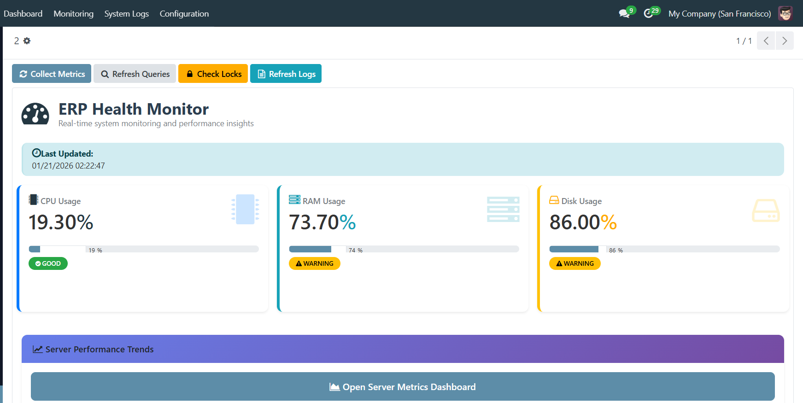
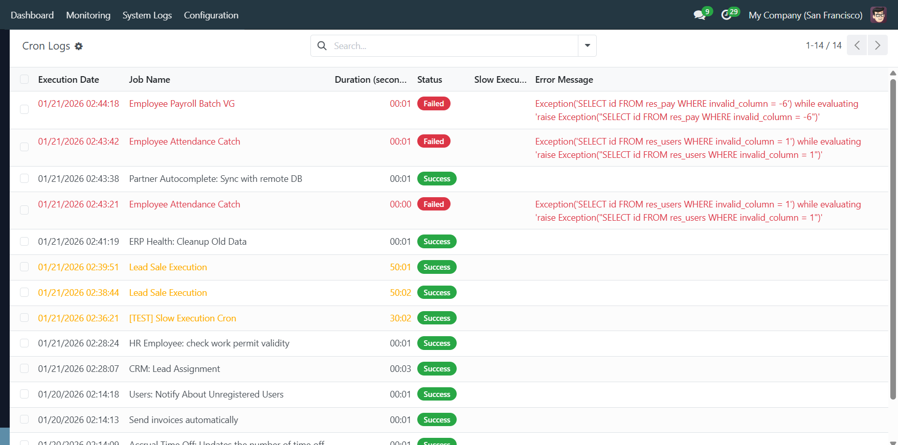
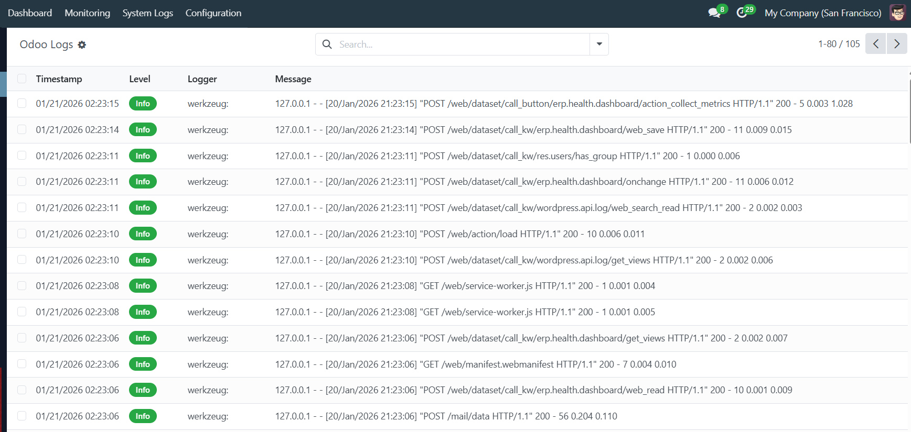
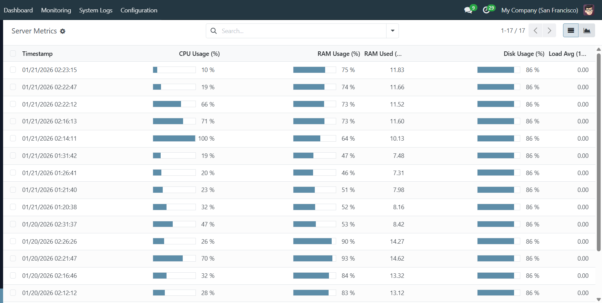

🏥 ERP Health Monitor
Complete System Monitoring & Performance Optimization for Odoo
System Monitoring
Performance
Admin Tool
Monitor, Analyze, and Optimize Your Odoo Instance
ERP Health Monitor is a comprehensive system monitoring solution designed specifically for Odoo. Keep your ERP system running at peak performance with real-time monitoring and detailed analytics. Perfect for system administrators and IT teams managing Odoo installations.
Key Features with Visual Overview
📊 Main Dashboard Overview
Get a complete overview of your Odoo system health at a glance. The main dashboard provides real-time metrics and quick access to critical system information including CPU usage, memory consumption, and database performance.

- Real-time System Metrics: CPU, memory, and disk usage monitoring
- Status Indicators: Visual alerts for critical issues
- Performance Graphs: Historical trends for system resources
- Active Sessions: Current user count and session information
⏰ Cron Jobs Management
Monitor scheduled tasks and their execution history. Track cron job performance, identify failed jobs, and analyze execution patterns to ensure your automated tasks run smoothly.

- Execution History: Complete log of scheduled task runs with timestamps
- Performance Tracking: Duration and status for each cron job
- Failure Detection: Identify when scheduled tasks fail
- Job Status: View active, inactive, and disabled cron jobs
📝 System Logs Viewer
View and analyze system logs with filtering and search capabilities. Monitor application logs, error messages, and warnings to quickly identify and troubleshoot issues.

- Log Filtering: Filter by log level, module, and date range
- Search Functionality: Quick search across log entries
- Error Detection: Identify recurring errors and patterns
- Log Export: Download logs for further analysis
💻 Server Metrics & Performance
Monitor detailed server resource metrics and performance indicators. Track CPU usage, memory allocation, disk I/O, and database connections to identify resource bottlenecks.

- CPU Monitoring: CPU usage and load averages
- Memory Analysis: RAM usage and swap utilization
- Disk Performance: Disk I/O and storage capacity
- Database Metrics: Connection pool status and query performance
⚙️ Configuration & Auto Cleanup
Configure automated maintenance tasks and system cleanup. Set up automatic cleanup schedules for old logs and temporary files to keep your system running efficiently.

- Automated Cleanup: Schedule automatic removal of old logs and temporary data
- Retention Policies: Configure how long to keep system data
- Cleanup Scheduling: Define when automated maintenance tasks run
Additional Powerful Features
🐌 Slow Query Analysis
Identify database queries that take longer than expected. The Slow Query List helps you pinpoint performance bottlenecks in your database operations.
- Detection of queries exceeding threshold times
- Query execution time tracking
- Query origin information (model, method)
- Historical query performance data
🔒 Database Lock Monitor
Monitor database locks and transactions to identify blocking queries and potential deadlock situations that can affect system performance.
- Active database lock tracking
- Blocking query identification
- Transaction duration monitoring
- Lock chain visualization
🗄️ Database Statistics
Monitor database health including table sizes, database growth, and overall database performance metrics.
- Table and index size tracking
- Database growth analysis
- Storage usage by table
- Database performance metrics
Why Choose ERP Health Monitor?
Comprehensive Monitoring: Monitor all critical aspects of your Odoo system from a single interface.
Easy to Use: Intuitive interface designed for system administrators and IT teams.
Performance Focused: Lightweight monitoring that doesn't impact your Odoo instance performance.
Automated Maintenance: Automatic cleanup of old logs and temporary files keeps your system efficient.
Technical Information
Compatibility: Odoo 18.0
Category: Technical / System Administration
License: OPL-1 (Odoo Proprietary License)
Dependencies: Base module (all monitoring features are self-contained)
Installation: Simple one-click installation from Odoo App Store
Transform your Odoo system monitoring today! Install ERP Health Monitor and gain complete visibility into your ERP infrastructure.
For support, documentation, or feature requests, please contact us through the Odoo App Store.